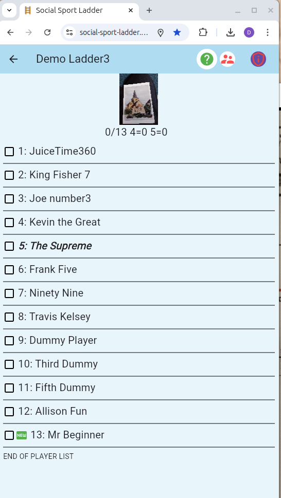
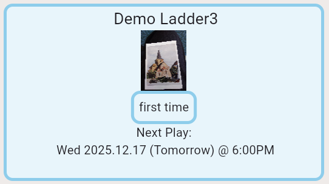
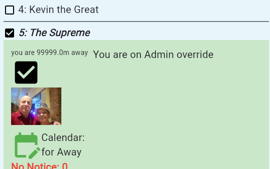
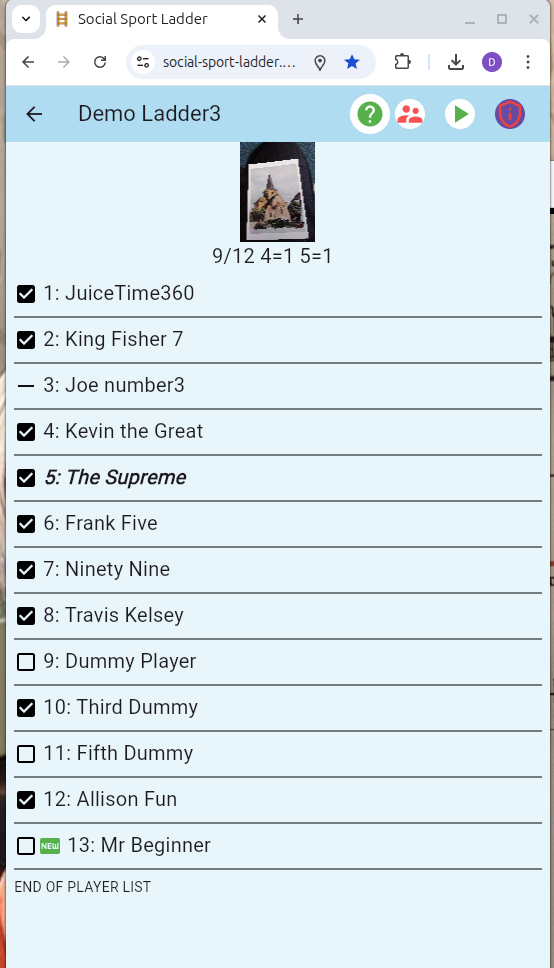
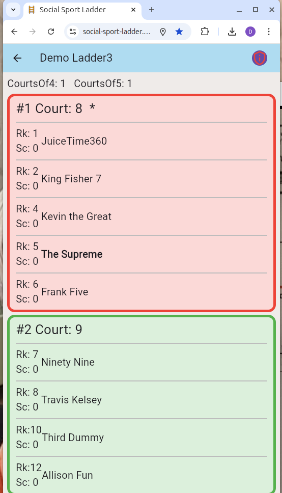
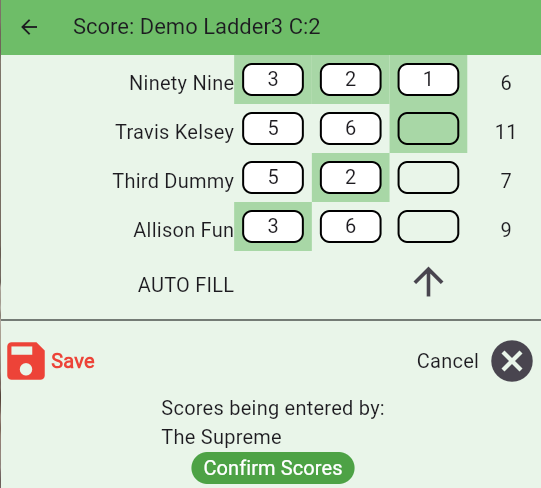
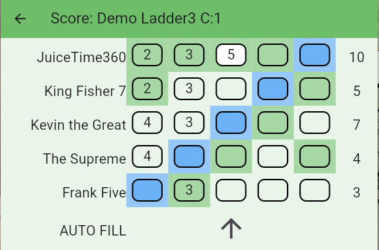

Social Sport Ladder Introduction
What is the https://social-sport-ladder.web.app ?
Do you have a club with at least 3 courts such as Tennis or Pickleball courts?
Would you like to give your members an easy way to organize ladder play, track scores, and compare their rankings with each other?
Looking for a low-pressure experience? The ladder app works automatically—no human influence required—and it's simple and fun to use.
Want to create a social event around it? The ladder app is perfect for organizing friendly, competitive gatherings where everyone can play together at once!
https://social-sport-ladder.web.app/info/Privacypolicy.html
This tool makes it easy to bring together a social group of adult sports enthusiasts for a fun, competitive game, using many or all of your courts at once. Typically, groups range from 12 to 35 players. While the usual format is doubles singles play is also supported. The experience emphasizes socializing, but there’s still a competitive edge. Best of all, you’re not locked into attending every week. If you can’t make it, no one will be offended—simply mark yourself as absent before a configured time on the day of play. This is very useful for administrators to know in advance how many courts will be needed by the ladder, and maybe free some up for other members to use.
This tool has been used in several racket sports that involve courts:
Tennis
Pickleball
Badminton
Squash
It usually requires a minimum of 3 courts but can support many more, including combining several groups together.
This is an individual ladder even though the sport is usually played in teams of 2. This maximizes the number of people that can play at the same time. If you win, you will move up the ladder for next time, if you lose you will move down the ladder for next time. This means you will be playing against people that are approximately at your level, with some variety every week. If you don’t show up then you move down. (Encourages at least reasonable attendance levels.)
This runs on iPhones and Androids using Chrome or Safari and looks just like an App but does not need to be installed.
Individuals (not teams) are placed in order on the ladder . The administrator puts players initially with their best guess and then the app takes care of making any necessary corrections by moving players up or down depending on how well they played each week.

Usually the ladder takes place once a week, but many other arrangements can be made:

Leading up to the time of the ladder players arrive at the club and mark themselves as present and ready to play. The app uses location to make sure they are actually at the club. There is a big checkbox to click, after they click on their name.

So at the start time of the ladder everyone will see a list of who is there to play:

In this case 9 people are available so it is ready to put 4 on one court and 5 on the other.

They are assigned in order so that players with similar abilities play each other. With courts of 5 one person has to sit out for about 20 min while the other 4 play. Everyone likes courts of 4 because there is no sitting out. The App randomly assigns which court will get the court of 5. By allowing courts of 4 or 5 most number of attendees can be accommodated. For example if you have 7 courts, optimally 28 would play but you could get 35 people playing. You can have more than 35 registered if you want to count on the fact that a few will not show up every week, or you can use the build in “wait list” feature to have more control of a larger list of players.
Court of 4:

In this case the 4 players play 8 games with each player as their partner and enter how many games they won. Depending on your available court time the number of games can be adjusted by the administrator.
Court of 5:

In this case the blue player sits out, the 2 green highlights play the 2 white boxes and record how many games out of 6 they won. There is an autofill button so that only one score needs to be entered, and it will figure out the rest. Depending on your available court time the number of games can be adjusted by the administrator.
The Movement
At the end of the night, one of the players has entered the scores and one player confirms the scores (good to stop arguments later). Then the app calculates what their new position on the ladder will be.
Players that are away move down one or two spots.
Players on the court are shuffled to match how they finished with the best score taking over the top spot. Ties are won by the person that started higher.
The winner of the court trades places with the loser of the court above.
This is all done automatically. In fact the app can run the ladder without any direct supervision on the night of play. There are assigned “Helpers” that can assist players that forgot their phone or are allergic to technology.
Every ladder needs at least 1 administrator and at least 3 Helpers. The roles of the administrator:
Communication: there are messages in the App that can be set, but emails or other postings can be used as well, images can be used to identify the ladder or promote something special.
Configuring: dates and times of play, registration of players, colors, and several other things
Finalizing the night. Sometime after the ladder has finished (maybe even the next day) the admin hits the button to finalize the scores thus moving players and preparing the ladder for the next week.
The app has been used at the Royal Glenora Club for years, and players consistently say it’s easier, more efficient, and much better than using a paper clipboard.
Many of the features are not mentioned here.